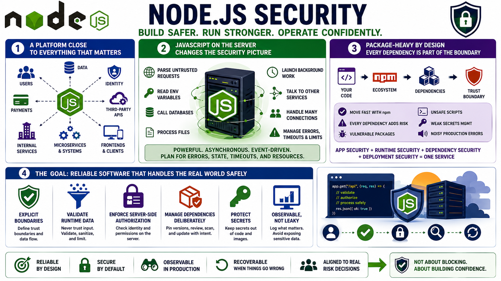

Why Node.js Application Security Matters
Connecting to LMS... Progress: in progress

Narration
Node.js is a common platform for APIs, web applications, microservices, automation, serverless functions, and backend-for-frontend systems. It often sits close to users, data, identity, payments, internal services, and third-party APIs. That makes Node.js security a practical concern for developers and operators, not a specialty topic that can be pushed to the end of the project.
Running JavaScript on the server changes the security picture. The application may parse untrusted requests, read environment variables, call databases, process files, launch background work, and talk to other services. Asynchronous execution and event-driven architecture help Node.js handle many concurrent operations, but they also require careful thinking about errors, shared state, timeouts, resource limits, and operational behavior.
Node.js development is package-heavy by design. Teams can move quickly because npm gives access to a large ecosystem, but every dependency becomes part of the application's trust boundary. Application security, runtime security, dependency security, and deployment security all meet in the same service. A safe route handler can still be harmed by weak secrets management, vulnerable middleware, unsafe package scripts, or noisy production errors.
The goal is reliable software that handles untrusted input, secrets, users, files, and dependencies safely. That does not mean memorizing every possible vulnerability. It means designing explicit boundaries, validating runtime data, enforcing authorization on the server, managing dependencies deliberately, protecting secrets, and making production behavior observable without turning the application into a data leak.